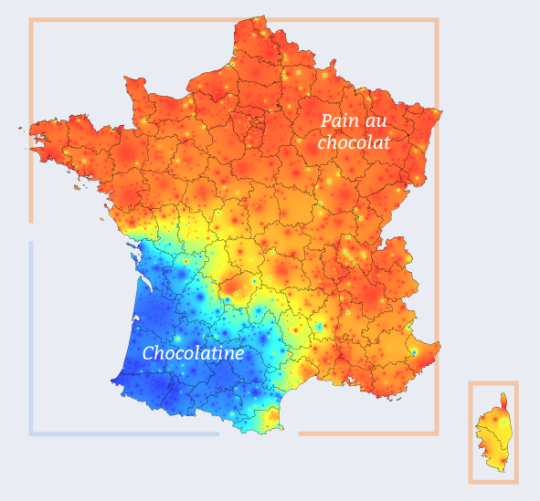

Bruno Bord
- Développeur Web
- Clown Computing
- Je hais le printemps
#vraisud
In Chocolatine We Trust

Principe de base
- Un hashtag #uksnow
- un code postal
- (éventuellement une intensité "/10")
Confession :
Oui, j'ai des copains Bifs
Je me dis...
TODO: photo du gars qui pense....